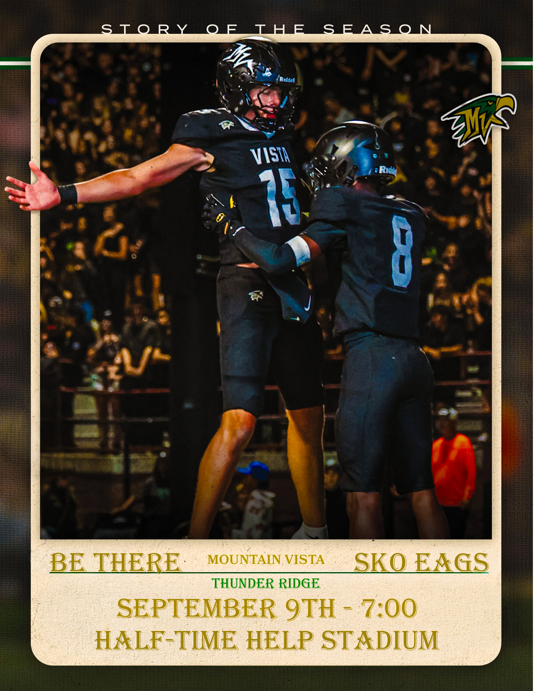
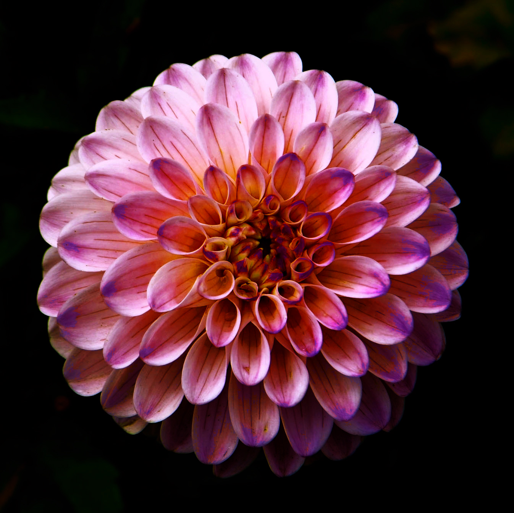
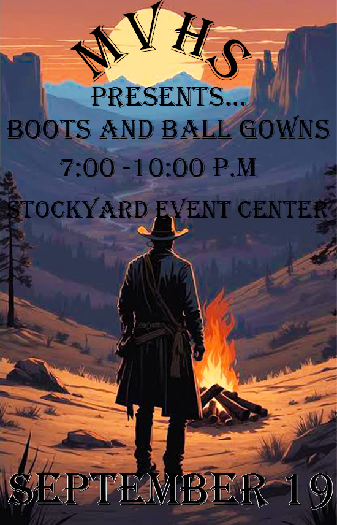
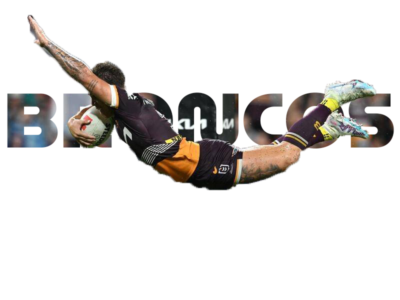

Football Image

I chose this image because it shows my fullest capabilities when it comes to my Photoshop skills. It is by far my best Photoshop image, as it really shows the MVHS mentality when it comes to Homecoming and the overall environment.
I used proper contrasting, image layering, and text layering. A few other tools I used were the burn tool on the edges and down at the bottom where the text is.
Flower Image

I chose this image of the flower because it shows proper color contrasting and even shading with the flower's background and colors. Another thing that I did to the flower was burn and use the eraser to help make the flower's coloring really stand out.
The skills that I used in the image above were color contrasting, proper shading, the burn tool, and background shading into the image.
Dance Image

This image advertises the Homecoming dance and shows my skills with Photoshop. It helps prove to the viewer that I am very proficient at Photoshop.
The Photoshop skills that I used were image layering, text layering, color contrasting, and shaders. In this image, I also demonstrated my skill with proper grade text curving.
Bronco Image

In this image, it helps show my skills with text masking and image masking, as you can see rugby player Reece Walsh in the air shown through the words, "BRONCO". This image is also one of my best pieces, and it shows my skills and proper choice of imagery that can help the viewer know a little more about me, my interests, and even how skilled I am at Photoshop.
I used skillful image and text alignments with a clipping mask, and the selection tool which I used on the player to make it appear as if he is jumping through the text in person. Another skill I used was image layering and text layering, along with contrast and vibrance.
Australia Flag Image

This image shows the Australian flag, which is where I was born. It holds a special place in my Photoshop creations, as I love Australia and its culture. Another reason that I chose this image is that it shows my favorite animal.
In this image, the skills that I used were proper text layering, proper image layering (as the koala is layered perfectly with the bottom image of the flag), and contrast with the koala's coloring and vibrance.